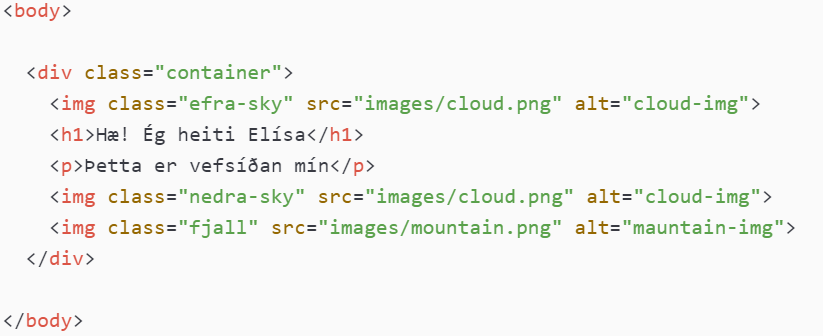
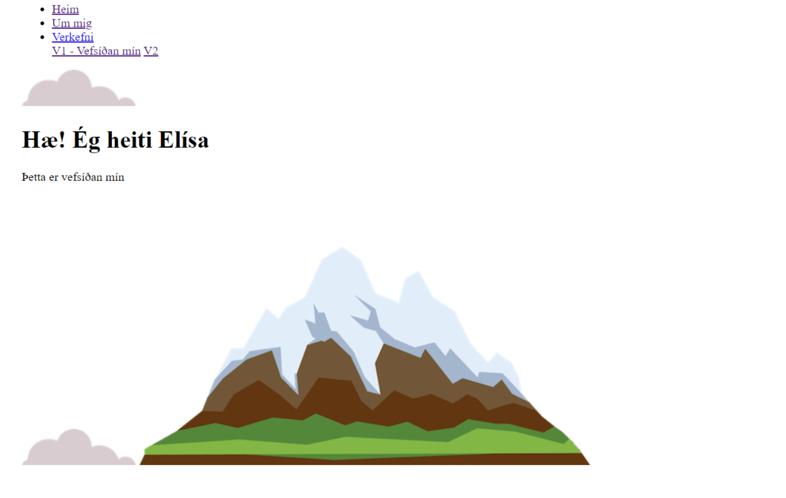
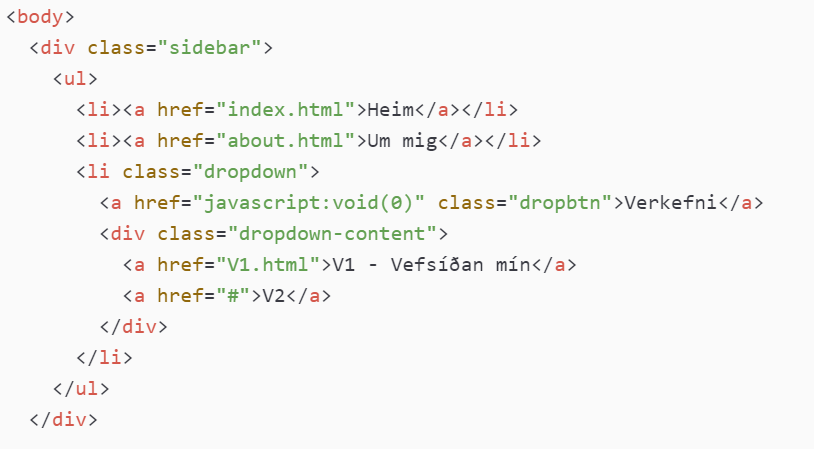
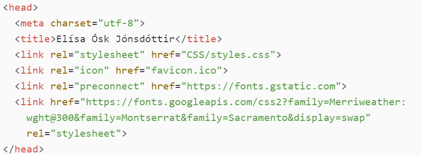
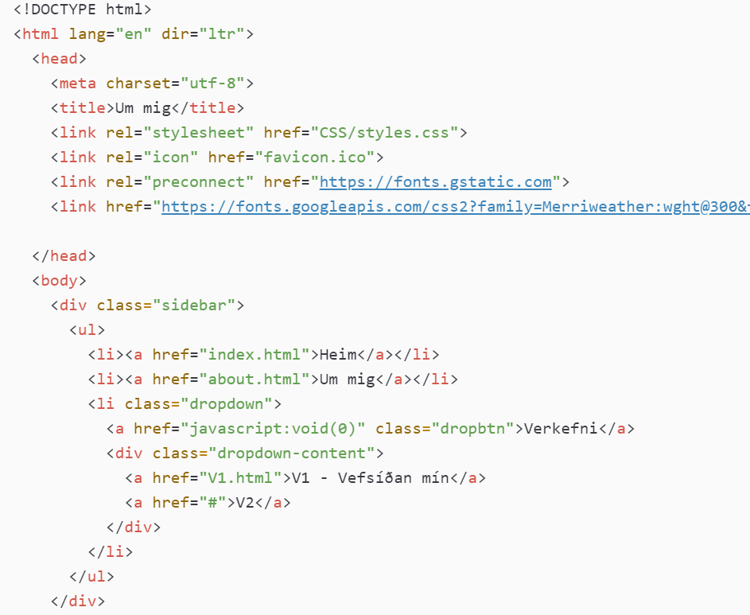
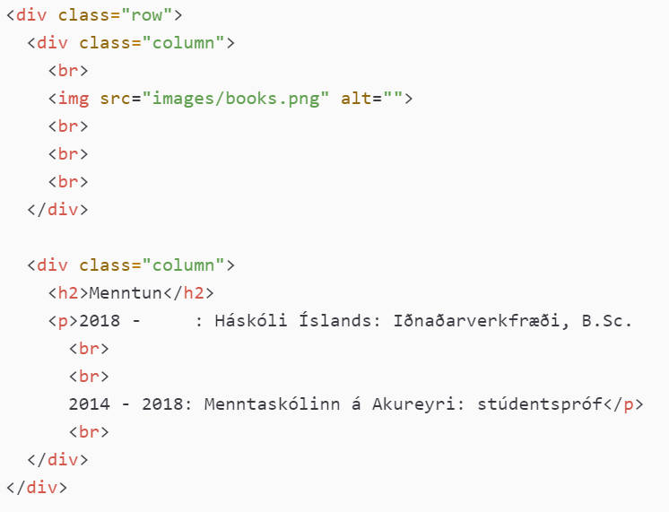

Í þessu verkefni átti að velja eða smíða html sniðmát fyrir vefsíðuna sína. Inn á vefsíðuna átti svo að setja inn upplýsingar um ferilskrána sína og skrásetja verkefnið. Að lokum átti að deila vefsíðunni inn á GitHub með því að nota Git bash.
Ég hef unnið dálítið með vefsíðugerð áður og þótti þetta verkefni því spennandi tækifæri til að rifja upp html og CSS.
Það fyrsta sem ég gerði var að horfa á myndskeið um vinnulag fyrir verkefnið sem kennarinn setti inn á Canvas. Ég ákvað að smíða mína vefsíðu frá grunni og nota ekki neitt sniðmát. Eftir að ég horfði á myndböndin frá kennara uppfærði ég
forritið Atom á tölvunni minni, en það notaði ég til þróunar á vefsíðunni.
Að lokum opnaði ég kúrs á Udemy.com, en þar tók ég fyrir nokkru kúrsinn "The Complete 2020 Web Development Bootcamp". Ég notaði kúrsinn mér til stuðnings við gerð vefsíðunnar.
Ég byrjaði á því að forrita aðal síðuna, eða "Heim" síðuna. Ég ákvað að hafa hana meira eins og forsíðu frekar en að innihalda upplýsingar. Hún inniheldur í rauninni bara eitt heading af gerð 1 (h1) og eina stutta paragraph línu (p), ásamt
tveimur myndum af skýi og einni mynd af fjalli.
Í upphafi, áður en síðan var skreytt með CSS, leit hún frekar einfaldlega út eins og sjá má á myndinni hér að neðan.
Html kóðinn fyrir síðuna hér að ofan er eftirfarandi:
Ég ákvað svo að bæta við val-borða efst á síðuna sem inniheldur linka á ferilskrána mína og verkefnin. Þetta er gert með lista og tilvísunum og notaðist ég við þessar leiðbeiningar á w3schools.com til aðstoðar. Nú leit síðan svona út:
Kóðinn fyrir borðann er eftirfarandi og er staðsettur inni í body, fyrir ofan div-ið sem hefur klasann container:
head hluti kóðans á aðal síðunni lítur svona út:
Ég bjó til einfalt merki (e. icon) sem birtist í þeim glugga (e. tab) sem síðan er opin. Til þess notaði ég vefsíðuna favicon.cc.
Hinir linkarnir vísa til dæmis í það hvert síðan á að sækja útlitið sitt (styles.css) og einnig hvert á að sækja leturgerðir síðunnar (nánar í "Útlit síðunnar").
Áður en ég hófst handa við að gera síðu með ferilskránni minni (Um mig) og skrifa um verkefnið ákvað ég að lappa upp á útlit síðunnar með CSS.
Það fyrsta sem ég gerði varðandi útlitið var að velja litapallettu fyrir síðuna. Ég vildi hafa síðuna létta og aðgengilega og notaði vefsíðuna colorhunt.co til að velja litina. Litapalletta 14832 varð fyrir valinu, en hana má sjá á myndinni hér að neðan:
Ljósasta litinn notaði ég sem bakgrunn síðunnar, þann næsta notaði ég fyrir merki síðunnar (favicon), þann næst dekksta notaði ég fyrir val-borðann efst á síðunni og fyrir takka neðst á þessari síðu. Dekksta litinn notaði ég fyrir texta og þegar mús er sett yfir takka á val-borðanum.
Því næst valdi ég leturgerðir fyrir vefsíðuna. Í stað þess að nota hefðbundnar innbyggðar leturgerðir notaðist ég við fonts.google.com. Þetta gerði ég til þess að sjá til þess að letur síðunnar birtist notanda eins óháð stýrikerfi.
og annar texti er í leturgerðinni Merriweather
Ég valdi að hafa allt innihald síðunnar miðjað (e. centered). Þá setti ég stillinguna text-align: center; inn í body.
Neðst á þessari síðu er slóð á það hvar hægt er að skoða kóðann fyrir stílsíðuna (e. stylesheet), ásamt fleiri kóðum.
Efst á síðuna "Um mig" setti ég val-borðann sem ég bjó til á aðal síðuna. Ég tengdi síðuna inn á sama stylesheet og aðal síðan og gaf henni titilinn "Um mig". Hér að neðan má sjá kóðann fyrir hausinn og val-borðann:
Síðunni skipti ég svo upp í 6 glugga. Í rauninni eru þetta þrjár tveggja dálka raðir ofan á hvor annari. Til aðstoðar notaðist ég við eftirfarandi upplýsingar á w3schools.com. Á stílsíðunni (e. stylesheet) valdi ég hæð dálkanna sem 300px og hafði padding ofan á röðunum sem 100px og neðan á sem 60px. Kóðann fyrir fyrstu röðina má sjá hér að neðan, en hann er svo endurtekinn fyrir hinar raðirnar. Myndirnar eru emojis og voru fengnar á emojipedia.org.
Til þess að hlaða vefsíðunni upp á GitHub fylgdi ég leiðbeiningum í myndbandi frá kennara.
1. Búa til aðgang að GitHub og búa til nýtt public repository.
2. Hlaða niður git og nota það til að hlaða skrám vefsíðunnar inn á GitHub.
3. Fara í settings inni í viðkomandi repository og skrolla niður í GitHub Pages.
4. Breyta branch í main og smella á Save.
5. Bíða í smá stund þangað til vefsíðan er komin í loftið.